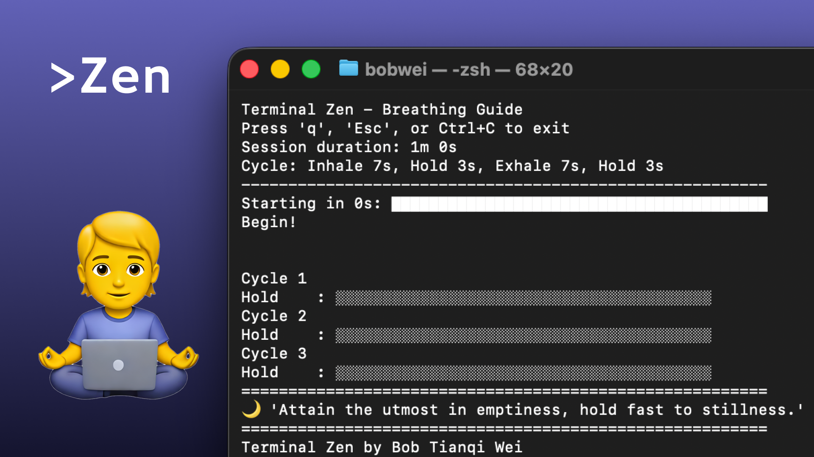

|
Site Menu
Project Info
Title: Quiet Shell Type: CLI tool / interaction design Focus: CLI interaction design, Python tooling, and conceptual product framing At A Glance
Alex Rowan Python, terminal UI, zero-dependency tooling 2026 Quick Links
|
Quiet ShellA breathing guide that keeps the terminal aesthetic intact while making room for pause and rhythm inside a work session.  Overview
Quiet Shell begins with a simple observation: many developers spend hours in terminal windows that are optimized for output but not for care or pacing. Instead of fighting that environment, the project works inside it. Progress bars become breathing cues, and ordinary command output becomes a quiet interaction ritual. Why It Works In This Template
This project demonstrates how Retroframe handles text-heavy storytelling without feeling flat. The side column helps orient the reader and the page frame gives the writing some structure. It is a strong default for tools, research projects, and experiments that need more than one sentence but less than a full longform case study. |